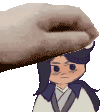

A short HTML game for Daisy.

Summary: Making it to Cang Qiong Mountain may have seemed hard, but you've made it nonetheless. Accepted into the sect, you've raised your rank in status on your peak and among peers. Now there's only one thing left to achieve.
Short, Liu Qingge endgame